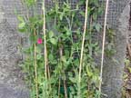
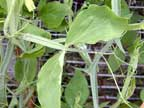
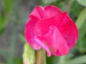
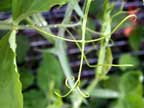
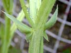

Sweet pea
Lathyrus odoratus
Other names
Description
Slender annual twining plant producing fragrant white, yellow, pink, red, blue or purple flowers. Many different varieties seen. Blooms from late spring through late summer.
Similar plants
There are nine species of Lathyrus or vetchlings in NZ. Everlasting pea (sometimes incorrectly called sweet pea) is common. All are probably poisonous. The edible chickpea is related.
Distribution
A relatively common plant seen throughout the country in gardens as an ornamental plant, and occasionally as an escape. Prefers sunny areas and well drained soils.
Toxin
Seeds/peas of the sweet pea are toxic due to the presence of the amino acid beta (gamma L glutamyl) aminopropionitrile. This compound is converted after ingestion to beta aminopropionitrile which causes the toxic effects.
Species affected
Cattle, sheep, dogs. Horses are particularly sensitive. No cases reported in NZ.
Clinical signs acute
Two forms are recognised: neurolathyrism: manifests as an irreversible paralysis of the legs. Includes transient laryngeal paralysis in horses associated with degenerative changes in the vagus and recurrent laryngeal nerves. Also seen as a slow, weak pulse, depressed, weakened respiration and convulsions. Osteolathyrism: manifested by a variety of skeletal changes due to inhibition of cross linking during the formation of collagen. Vascular wall development can also be affected by the inhibition of elastic fibre formation; this will limit vascular wall stretching and will thus predispose to aneurysm. Cattle: generally affected by osteolathyrism, with lameness manifesting between the third and fifth days after consumption. Lameness is rarely severe. Horses: generally affected with neurolathyrism. Weight is shifted to front legs, hind legs are held forward, and locomotion is a hopping, painful gait. Seem normal in recumbency, and there may be paralysis of the recurrent laryngeal nerve (dyspnoea and roaring). Skeletal deformities have been reported in experimental animals.
Clinical signs chronic
Post mortem signs
A dissecting aneurysm of the aorta and a direct neurotoxic effect results in the degeneration of the spinal cord and nerves to the hind limbs.
Diagnosis
Post mortem lesions, presence of plant in paddock and in the stomach, limb paralysis, painful gait (lameness) and roaring (in horses).
Differential diagnosis
Colic (horses), osteoarthritis, copper deficiency (defective collagen formation), Lower motor neuron disease, aortic thrombosis (acute cases), strychnine, spinal trauma, cytotoxic oedema
Treatment
Essentially supportive therapies, if a large amount of seed has been ingested induce emesis where possible, and perform a gastric lavage. Dose with activated charcoal and a saline cathartic.
Prognosis
Recovery can be complete, however some animals may be chronically affected. Death is possible in extreme acute cases.
Prevention
Remove plant from paddocks.
References
Conner H.E. The Poisonous Plants In New Zealand. 1992. GP Publications Ltd, Wellington
Cooper M R, Johnson A W. Poisonous Plants and Fungi in Britan: Animals and Human Poisoning. Her Majesty’s Stationary Office. London. 1998
Parton K, Bruere A.N. and Chambers J.P. Veterinary Clinical Toxicology, 2nd ed. 2001. Veterinary Continuing Education Publication No. 208
 plant |
|
|
|
 |
 |
|
|
|
 tendrils |
|
|
 |
|
|